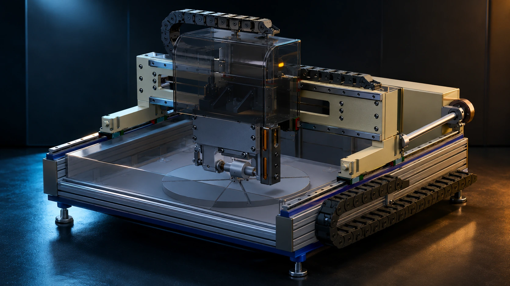
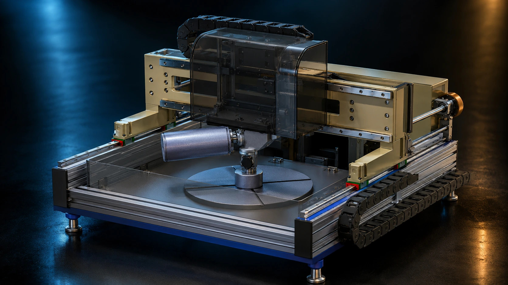

Investor takeaway: the A20-300 makes the MAP story tangible. Instead of abstract claims alone, the website now shows two machine configurations, explains what each one represents, and connects the equipment directly to pilot validation, sample testing, and commercial readiness.

Horizontal-axis configuration. This first A20-300 view introduces the pilot platform as real hardware for precision-surface evaluation. It is shown as a dedicated product-style machine visual rather than a pasted bilingual PDF page.
Configuration 01
Why the horizontal-axis view matters
This configuration helps explain the A20-300 as a controlled, testable polishing platform. In the website narrative, it represents the first part of the pilot story: establishing a hardware system that can process advanced samples under a defined inductor-tool arrangement.
What the image is doingIt gives the website a premium hardware moment — something investors can immediately read as a machine platform, not just a process concept.
What the business story isThis is where partner evaluation begins: a practical configuration for working through sample programs, process development, and side-by-side validation against incumbent finishing methods.
What the investor should understandMAP has a bridge from laboratory-scale claims to partner-facing equipment. That bridge is what makes licensing, integration, and paid validation more believable.
How the section reads: first, show a clean product-grade view of the machine. Then explain why the pilot system matters commercially. Then show the second configuration so the reader understands the platform is flexible, configurable, and designed for real evaluation workflow — not just one frozen render.
How to read this pilot system
Two replaceable inductor-tool configurations make the A20-300 much easier to understand.
The A20-300 is best framed as a pilot and sample-testing platform. One machine view highlights the horizontal-axis configuration. The next view highlights the vertical-axis configuration. Between them, the website explains the validation path: configure the tool, process the sample, measure the result, and convert the outcome into partner traction.
Pilot roleSupport sample evaluation for semiconductors, optics, and other precision surfaces where MAP can be compared with incumbent polishing approaches.
Commercial roleProvide a credible equipment story for investor conversations, strategic outreach, licensing, integration, and co-development programs.
Claim disciplineShow real hardware credibility while keeping the language careful: pilot-ready, partner-ready, and to be validated — not overclaimed as full production deployment.

Vertical-axis configuration. The second full-width machine visual completes the A20-300 story by showing another inductor-tool orientation in a more premium, investor-readable format.
Configuration 02
Why the vertical-axis view matters
This second machine view shows that the A20-300 is more than one static configuration. It helps the page communicate flexibility, practical engineering, and a more complete product narrative.
What the image is doingIt visually separates the second configuration so the visitor can absorb it as its own system state, instead of trying to decode both views inside one crowded graphic.
What the technical story isDifferent inductor-tool orientations help explain how the machine can be adapted for different sample geometries, evaluation setups, or polishing strategies.
What the website story isBy turning one combined technical image into two premium machine cards, the page feels more like a 2026 investor website and less like a technical appendix pasted onto the screen.
A20-300 machine specs from supplied PDF
Tooling conceptTwo replaceable inductors with horizontal and vertical axes of rotation.
Maximum workpiece300 × 300 × 80 mm.
Installation size720 × 700 × 430 mm.
Installation weight45 kg.
In the website narrative, A20-300 is presented as the practical pilot platform that links MAP’s reported nanoscale results to real partner evaluation. That makes the story more credible, more premium, and easier for investors to follow.